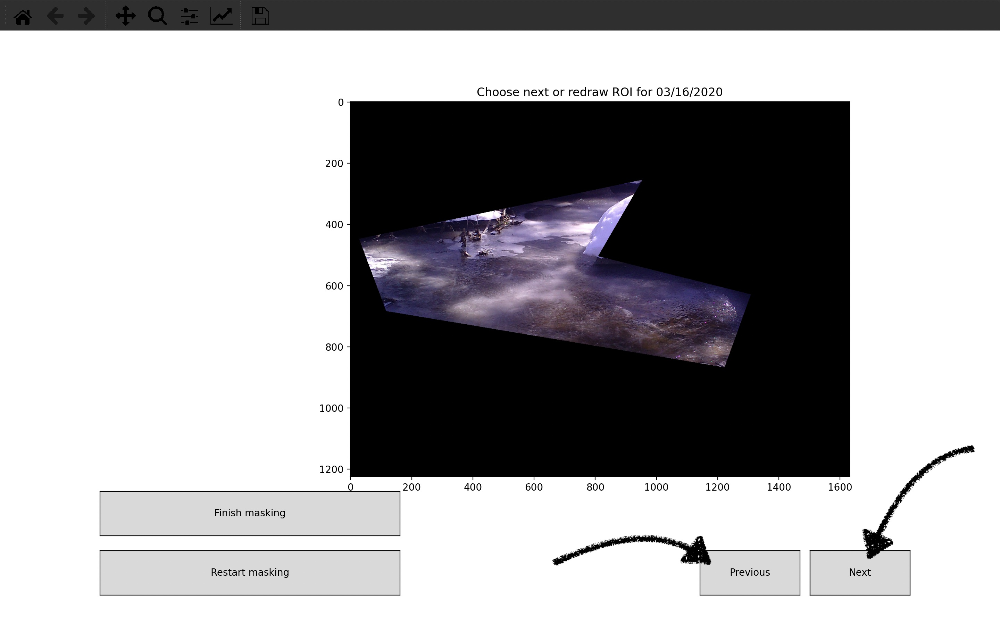
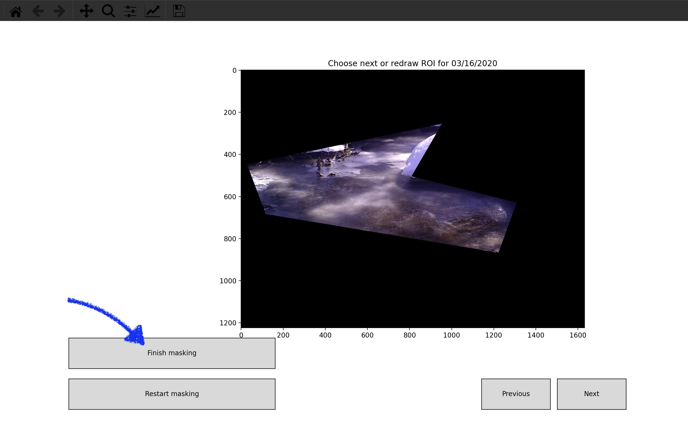
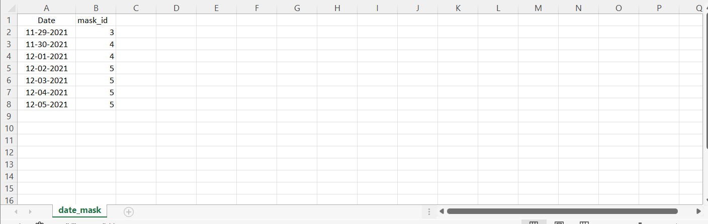

Chapter 3 Selecting Region of Interest
This chapter provides an overview about the Python scripts used to create a polygonal region of interest and mask for images contained in folders.
A region of interest is often needed to eliminate irrelevant regions or sections of the image. In our case, we wanted to focus solely on stream water/ice rather than surrounding rocks or shrubbery (these could interfere with the machine learning step later).
Before beginning this section, ensure that all image files are properly named.
interactive_ROI_app.py is the script used to create a region of interest and mask for images within a folder. Below is a visual aid concept map that outlines the steps within this process.

3.1 Using the Script
This section will explain the necessary elements and steps for you to follow while using this script. For more information about how the script works, see Section 3.2; for more information about the functions within the script, see Section 3.3.
3.1.1 Import Packages
Before running the script, load in all necessary packages. While testing our script, we have found that the “Qt5Agg” backend works best for Windows system while the “MacOSX” backend works best for Apple. These backends allow us to work interactively with the python plotting library matplotlib. For more information, visit matplotlib’s official website.4
During testing of the script, we found PyCharm to be the best IDE for running the script, because vscode didn’t support interactivity through matplotlib. Thus, we recommend using PyCharm to run this program.
import re
import matplotlib as mpl
import os.path
import pandas as pd
from PIL import Image
mpl.use('Qt5Agg') # backend
import cv2
from roipoly import RoiPoly
import glob2
import numpy as np
import matplotlib.pyplot as plt
from matplotlib.widgets import Button
from collections import OrderedDict
from matplotlib.path import Path as MplPath3.1.2 Set Folder Path
Our script denotes the file path to a folder and stores it in a variable folder_path. Change the example path to the path of the folder for which to operate on. We then use the .glob function of the glob package to store the file path for each image into the variable image_folder.
folder_path = r"\Example\Path\To\Folder"
image_folder = glob2.glob(folder_path + "/*")3.1.3 Drawing ROIs
After setting the folder path, run the script to open a popup window – this is the matplotlib interactive interface. It should display the first image in image_folder and give you the option to select an ROI.

In the matplotlib interactive interface, a point is drawn by left-clicking. By left-clicking again, a new point is created and the line becomes static. A new line is again shown from the last point to the user cursor.
To complete a figure, the user right- or double-clicks, bounding the last selected point to the first. The polygon created within the image is the region of interest (ROI).
Once you have finished drawing your ROI, click the Confirm button to apply the ROI and mask to all remaining images in the folder.

After the mask has been applied, you can view the mask overlaid on all the remaining images (or prior images) by clicking the Previous or Next buttons.

In some cases, the original ROI may no longer fit the new image - this is often the case if, for instance, snow melts and the water levels of the river rise. In such cases, redrawing the ROI may be necessary. To do this, click the Restart masking button, which should again bring up the interactive interface and allow you to redraw and confirm an ROI.

Once you are satisfied with your new ROI, click the Confirm button to apply the new mask to the remainder of the images in the folder, and keep scrolling with the Previous and Next buttons. Then, click Finish masking when you are done.

This will close the ROI window and generate data frames containing information about the masked images, as well as a folder containing the masked images.
3.1.4 Output
After you are done drawing ROIs, the script will generate three seperate outputs automatically. See the photos below for examples.
The first is a wateryear folder containing masked images.

The second is a dataframe that stores each mask_id to its associated mask.

Finally, the script will generate a dataframe that stores each mask_id to its associated date.

3.2 RoiPoly Functionalities
RoiPoly5 is the python module from which our mouse click events are handled. The functions within this script allow the user to create an ROI by drawing a polygon with mouse clicks. The following section will provide a descriptive overview of the script and its functions.
3.2.1 ImageFile Class
The script contains a class named ImageFile. Objects in this class have information
from a file along a specific filepath as their attributes.
class ImageFile:
""" Image File class to save file path, file name, date, mask_id"""
def __init__(self, filename):
self.path = filename
self.image_name = filename.split("\\")[-1]
self.date = self.get_date()
self.mm, self.dd, self.yy = self.date.split("/")
self.mask_id = NoneThere is an ImageFile object for each image in the folder image_folder. Within this class are functions that extract the time stamp and an array of RGB values for each image. Additionally, the water year for each image is derived from its timestamp, as is a sliced-array version of each image for faster plotting. These objects are appended to image_file_list, which is then sorted by water years.
A list with complete information of every file in image_folder is appended to image_file_list, which is then sorted and converted to a list of arrays for plotting purposes.
image_file_list = []
for filename in image_folder:
filetype = filename[-4:]
# Check if the file name ends with ".JPG" or ".jpg"
if filetype.lower() != ".jpg":
continue
curr_IF = ImageFile(filename)
image_file_list.append(curr_IF)
# sort by year, then month, then day
image_file_list = np.array(sorted(image_file_list, key=lambda x: (x.yy, x.mm, x.dd)))3.2.2 First ROI and Masking Function
Upon running the script, a popup window will open displaying the first image in image_folder. The user can then select a polygonal ROI and apply a mask.
Each selected point in a created polygon is stored into poly_verts (short for polygon vertices), which is used to create the mask outline for the region of interest.
def get_mask_poly_verts(image, poly_verts, on_original=False):
if len(np.shape(image)) == 3:
ny, nx, nz = np.shape(image)
else:
ny, nx = np.shape(image)
# if mask is applied to original, each coordinate is multiplied by 2
if on_original:
poly_verts = [(2 * x, 2 * y) for (x, y) in poly_verts]
x, y = np.meshgrid(np.arange(nx), np.arange(ny))
x, y = x.flatten(), y.flatten()
points = np.vstack((x, y)).T
roi_path = MplPath(poly_verts)
mask = roi_path.contains_points(points).reshape((ny, nx))
return maskAfter creating a region of interest, the user must click the Confirm button to proceed and apply the mask. These buttons are part of matplotlib’s Button module.
Creating one requires an event function, as well as button initialization as seen below for the Confirm button. The confirm_roi event is triggered when the button is clicked.
confirm_ax = plt.axes([0.81, 0.05, 0.1, 0.075])
confirm_button = Button(confirm_ax, 'Confirm')
confirm_button.on_clicked(confirm_roi)
confirm_button._button = confirm_buttondef confirm_roi(event):
"""
Callback event for confirm button
If users select ROI and hit confirm, save the poly_verts and apply it to the rest of images
Then, start showing next and previous buttons
"""
# save current mask's poly_verts starting from start_img_ind index
for i in range(start_img_ind, len(image_file_list)):
poly_verts_list[i] = curr_poly_verts
img_display_axis.set_title("Choose next or redraw ROI for {}".format(image_file_list[start_img_ind].date))
# button to show next and prev masked images
_ = show_next_prev()We use Boolean algebra to apply the mask onto the image, rendering everything outside of the ROI black.
After the ROI is confirmed and mask is applied, users can click the Previous and Next buttons to view subsequent/prior images in the folder with the mask applied.
These are part of the callback function Callback, which makes sliding through a folder possible through indexing. By indexing, each image is drawn with its associated date in the figure title.
def next(self, event):
"""
:param event: event callback for matplotlib button
Slide to the next image in folder and display it
"""
self.index += 1
if not self.index_in_range():
print("Reached End of Folder")
self.index -= 1
return
im = self.get_masked_img()
img_display.set_data(im)
img_display_axis.set_title("Click next or draw new ROI for Date: {}".format(image_file_list[self.index].get_date()))
plt.draw()
def prev(self, event):
"""
:param event: event callback for matplotlib button
Slide to the previous image in folder and display it
"""
self.index -= 1
if not self.index_in_range():
print("Reached Start of Folder")
self.index += 1
return
im = self.get_masked_img()
img_display.set_data(im)
img_display_axis.set_title("Click next or draw new ROI for Date: {}".format(image_file_list[self.index].get_date()))
plt.draw()To redraw the ROI and apply it to the remaining images, the user must click the Restart masking button. The user can then create a new region of interest and click Confirm to proceed to apply the new mask. After creating a new ROI, the user has the option to either confirm or to redraw the ROI again.
The underlying dynamics of the restart_masking button can be seen here.
def restart_masking(event):
"""
:param event: Callback event when user restarts masking
Clears plot and begin a new ROI masking session
"""
global my_roi, confirm_button, restart_masking_button, img_display, img_display_axis, start_img_ind, curr_mask, curr_poly_verts
# clear plot
plt.clf()
# create new plot
fg_2 = plt.gcf()
fg_2.subplots_adjust(left=0.3, bottom=0.25)
fg_2.set_size_inches(w, h, forward=True)
# change the content of image on curr axis
img_display_axis = plt.gca()
if not callback.index_in_range():
print("OUT OF RANGE")
return
curr_ind = callback.index
curr_obj = image_file_list[curr_ind]
img_display_axis.set_title("Confirm ROI? Date: {}".format(curr_obj.get_date()))
img_display = img_display_axis.imshow(curr_obj.read_img_sliced())
# display new ROI pop up
my_roi = RoiPoly(color='r', close_fig=False)
# wait until the user finishes selecting ROI
while not my_roi.finished_clicking:
plt.pause(0.01)
# mask current image and display
cp = curr_obj.read_img_sliced().copy()
curr_mask, curr_poly_verts = my_roi.get_mask(cp)
cp = apply_mask(cp, curr_mask)
start_img_ind = curr_ind
img_display = img_display_axis.imshow(cp)
# Create a confirm mask button for new session
confirm_ax = plt.axes([0.81, 0.05, 0.1, 0.075])
confirm_button = Button(confirm_ax, 'Confirm')
confirm_button.on_clicked(confirm_roi)
confirm_button._button = confirm_button
# Create a restart mask button for new session
restart_masking_ax = plt.axes([0.1, 0.05, 0.3, 0.075])
restart_masking_button = Button(restart_masking_ax, "Restart masking")
restart_masking_button.on_clicked(restart_masking)
plt.draw()Once masking has been complete, click the Finish masking button to close the figure. This button event also generates the output of the script. This event is slow and hefty, expect a long processing time.
def finish_masking(event):
"""
:param event: Callback event for finish masking button
save dataframe linking mask_id to actual mask (mask_df)
create water year folders
save dataframe linking date to mask_id (date_mask_df)
apply masks on original images and save them in their respective water year folders
close plot
"""
global poly_verts_list
# collect unique poly_verts and assign mask_ids to them
poly_verts_unique_list = []
mask_id = -1
for i in range(len(poly_verts_list)):
if mask_id == -1 or poly_verts_list[i - 1] != poly_verts_list[i]:
mask_id += 1
poly_verts_unique_list.append(poly_verts_list[i])
# assign mask_ids to all ImageFile objects
image_file_list[i].mask_id = mask_id
# Save a mask_df data frame with columns mask_id-> actual mask(poly_verts) and save it
mask_df = pd.DataFrame(list(zip(poly_verts_unique_list)), columns=["poly_verts"])
mask_df.index.name = "mask_id"
mask_df_dst = folder_path + "/" + "mask_df.csv"
mask_df.to_csv(mask_df_dst)
# print(mask_df.head())
# collect all information from ImageFile Objects
image_file_info = pd.DataFrame(
[(i.date, i.mask_id, i.path, i.get_water_year(), ind, poly_verts_list[ind]) for ind, i in
enumerate(image_file_list)],
columns=["Date", "mask_id", "file_path", "WY", "list_index", "poly_verts"])
image_file_info.set_index("WY", inplace=True)
# print(image_file_info.head())
# list of water years
list_wy = list(image_file_info.index.unique())
print("STARTED SAVING")
print("This takes about 1 second per an image file")
for water_year in list_wy:
# Create folders for each water year
wy_dest = folder_path + "/" + "WY" + str(water_year)
if not os.path.exists(wy_dest):
os.mkdir(wy_dest)
# loop through index of image_file_objects and save original images with their mask
df = image_file_info[image_file_info.index == water_year]
# save a date_mask dataframe with columns date-> mask_id -> file name
date_mask_df = df.reset_index()[["Date", "mask_id"]].set_index("Date")
date_mask_df.to_csv(wy_dest + "/" + "date_mask.csv")
# mask images within a selected water_year
for index, row in df.iterrows():
folder_index = row["list_index"]
curr_file_path = row["file_path"]
# save masked image to WY destination
curr_obj = image_file_list[folder_index]
curr_file_name = curr_obj.image_name
curr_original_image = curr_obj.read_img_orig().copy()
curr_original_mask = get_mask_poly_verts(curr_original_image, poly_verts_list[folder_index],
on_original=True)
curr_original_image = apply_mask(curr_original_image, curr_original_mask)
curr_img_save_dest = wy_dest + "/" + curr_file_name
# save curr_original_image
Image.fromarray(np.array(curr_original_image)).save(curr_img_save_dest)
print("FINISHED SAVING")
plt.close()3.3 Documentation
For complete documentation and explanations behind the code, see the script itself. Below is a list of all functions within the script and a brief description of their purpose.
| Function | Description |
|---|---|
| init | Constructor |
| get_date | Extracts date pattern (MM/DD/YY) from file name (eg. Hbwtr_w3_20200315_115918.JPG) |
| get_water_year | Extracts water year from dates (a water year runs from October 1st of the year prior to September 30th of the current year) |
| read_img_orig | Reads image path and returns original image (as np.array) |
| read_img_sliced | Reads image path and returns sliced image (np.array) for faster display |
| next | Slides to next image in image folder and displays it |
| prev | Slides to the previous image in folder and displays it |
| index_in_range | Checks if the current index is within the range of the image_file_list |
| get_masked_img | Apply mask from poly_verts_list and return masked image |
| start_roi_selection | Allows user to select and confirm ROI |
| show_first_image | Displays the first image |
| confirm_ROI | If ROI is confirmed, save poly_verts and apply to the remaining images |
| show_next_prev | Creates next, previous, and finish buttons |
| restart_masking | Clears plot and begin a new ROI masking session |
| finish_masking | Saves dataframe linking mask_id to actual mask (mask_df), creates water year folders, saves dataframe linking date to mask_id (date_mask_df), applies masks on original images and saves them in their respective water year folders, then closes plot |
| apply_mask | Applies mask to image |
| get_mask_poly_verts | Returns coordinates for image mask that can be applied to image |
Information on matplotlib backends can be found at https://matplotlib.org/stable/users/explain/backends.html↩︎
Our version of RoiPoly is derived from jdoepfert’s roipoly.py, whose module can be found on at https://github.com/jdoepfert/roipoly.py↩︎